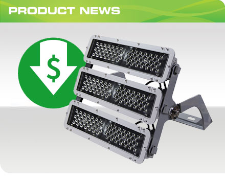

HID POST TOP LAMPS
HID POST TOP LAMPSMaxLite’s HID Series Post Top lamps are the easy and long-lasting replacements for HID bulbs in high/low bay fixtures and decorative post top luminaires. Designed to retrofit E26/E39/EX39 sockets with a simple ballast bypass, these LED lamps deliver high quality illumination at 60 percent energy savings vs. conventional light sources. The family includes five wattages, with outputs ranging from 3,900 to 15,000 lumens, to replace 100W - 400W metal halide bulbs. The lamps are suitable for use in enclosed fixtures, as well as damp locations. View the datasheet for complete specifications. Key Features & Benefits • Sensor port • 120-277V, ballast bypass • Non-dimmable • Long life: 50,000 hours (L70) • 5 Year limited warranty • Available in 4000K, 5000K • Vertical base up or base down mounting |
 HID SENSORS
HID SENSORSMaxLite offers dusk to dawn and motion control photocell sensors that can be paired with our new HID Post Top Lamps to increase energy savings and manage light output based on ambient light and occupancy. View the sensor datasheet for complete specifications. PIR Sensor (PIR-PT) • Motion detection • On-off functionality • Adjustable standby levels 20%, 40% or 60% dimming • On time 30 seconds, 90 seconds, 5 or 10 minutes Microwave: Occupancy (MS-PT) • Motion detection • 360° detection through walls and objects • On-off functionality • Adjustable standby levels 20%, 40% or 60% dimming • On time 30 seconds, 90 seconds, 5 or 10 minutes Dusk to Dawn: Photocell (DTDS-PT) • Natural light detection • On-off functionality • Reaction lux options: 20 lx, 50 lx, 100 lx, or 300 lx • On time: 1 minute, 5 hours, 8 hours, constant |
 CLASSIC BOLLARDS IN 36” HEIGHTS NOW DLC STANDARD LISTED
CLASSIC BOLLARDS IN 36” HEIGHTS NOW DLC STANDARD LISTEDMaxLite’s round and flat top 36” Classic Series Bollards are now DLC Standard Listed and eligible for utility rebate programs. An economical and energy efficient choice for lighting walkways, plazas and other pedestrian areas in commercial and residential applications, these durable aluminum bollards feature a specialized cone reflector that projects light down and outward for ample illumination that enhances pedestrian safety and security. |
 DISC LIGHT NOW LOWER IN PRICE
DISC LIGHT NOW LOWER IN PRICEPricing has been reduced on the Disc Light Series (Faux Can), with savings of up to 10% on all models. The Disc Light delivers the approach of recessed downlighting without requiring installers to use a recessed can. Providing exceptional performance in general lighting applications for homes, hotels, motels and commercial properties, Disc Lights can replace PAR 30 halogen lamps up to 75W. View complete specifications here. |
|

SAVE ON STAXMAX StaxMAX High Output Flood Lights are now lower in price - up to 10 percent savings across the line! Ideal for car dealerships, sports parks, golf driving ranges, facades, general area and high bay applications, the StaxMAX can be specified in one-, two- or three- 180 watt module configurations to replace metal halide fixtures up to 1000W. |
 CATALOG FOR EXIT/EMERGENCY LIGHTING AVAILABLE
CATALOG FOR EXIT/EMERGENCY LIGHTING AVAILABLECatalog pages for the Exit and Emergency Lighting category are now available under Print Resources. The online version of the LED General Catalog has also been updated to include these products. |
|